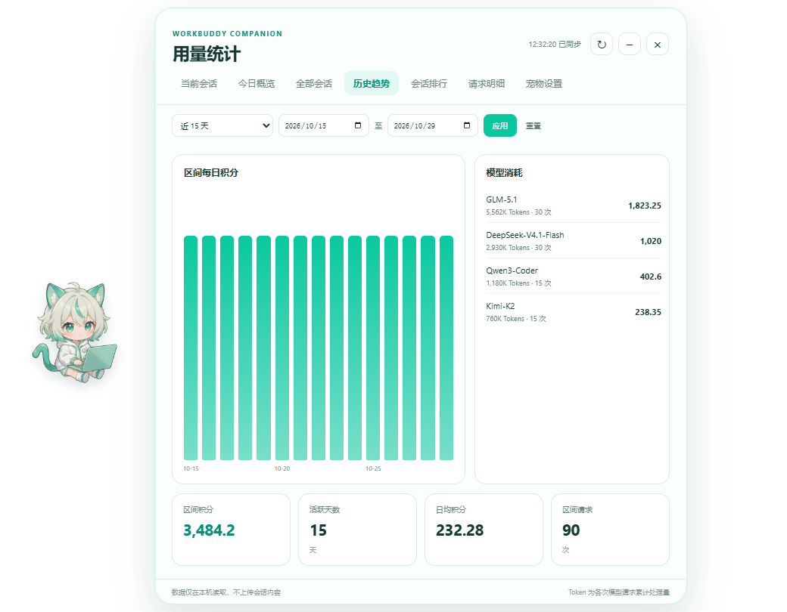
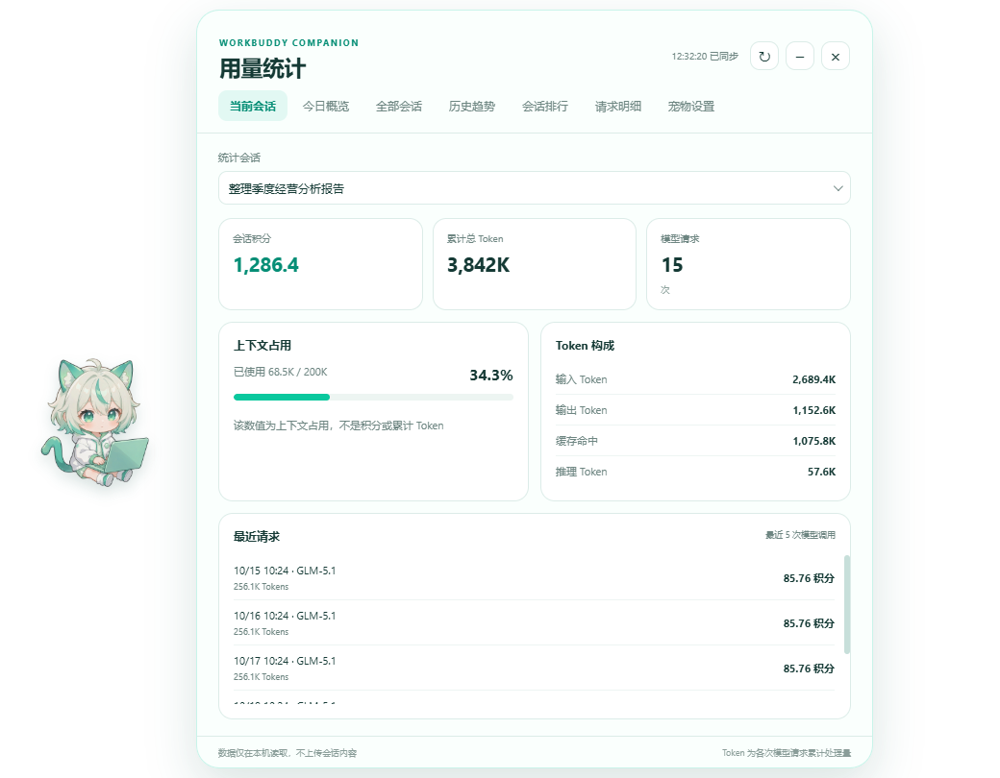
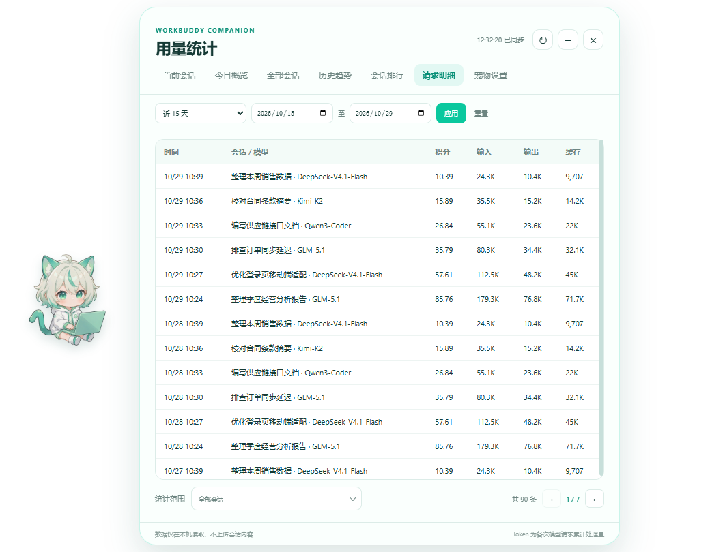
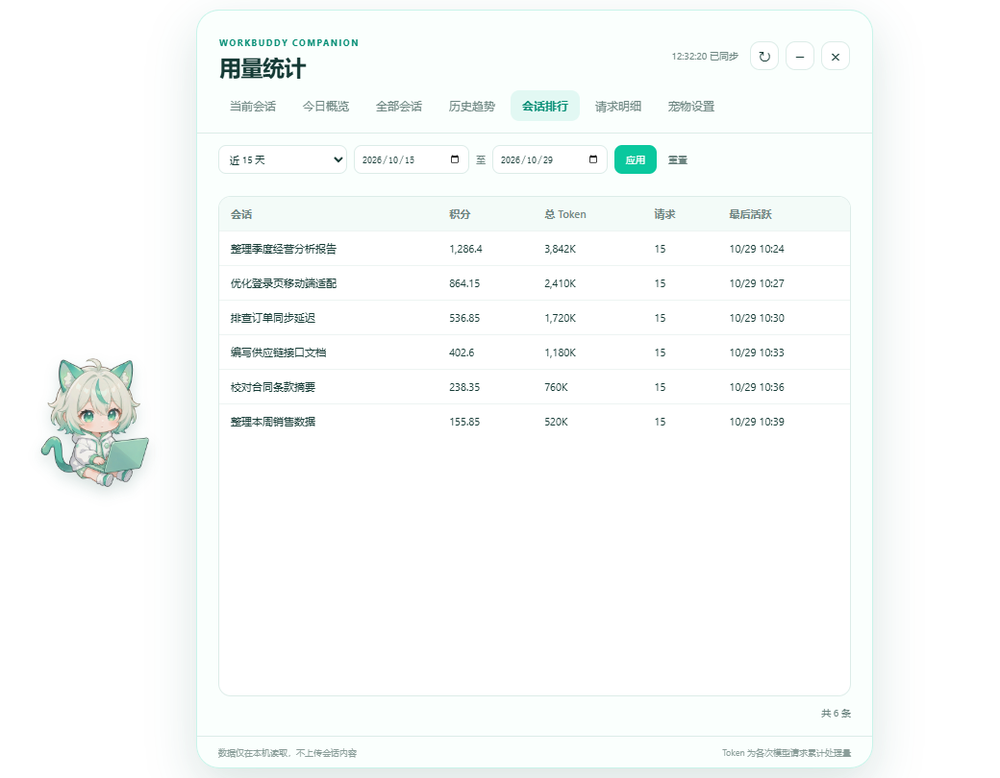

趋势洞察
消耗曲线，一眼就有判断。
按日期区间查看每日积分和模型消耗，快速发现用量高峰、模型偏好和异常增长，不需要打开表格。
- 近 7 / 15 / 30 天与自定义区间
- 模型消耗排行与 Token 构成
- 区间积分、日均和请求汇总

小哇安静地待在桌面，帮你汇总 WorkBuddy 的积分、Token 和会话趋势。需要时展开面板，不需要时绝不打扰。
最新版本 v0.2.0 · Windows 10/11 x64 · 免登录

从一眼可见的今日消耗，到可以追溯的请求明细，小哇把散落在本地的数据整理成顺手就能看懂的面板。
按日期区间查看每日积分和模型消耗，快速发现用量高峰、模型偏好和异常增长，不需要打开表格。

按会话、模型和时间查看积分与 Token，让“为什么今天用得多”不再靠猜。

会话排行按照积分与 Token 排序，长时间跨度下的重点会话一目了然。

透明置顶、可拖动、可隐藏。处理中、完成、停止和失败都有轻量状态提示，也能设置免打扰时段与提示音。
小哇只读取当前 Windows 用户的 WorkBuddy 本地用量记录。它不需要账号，不上传会话标题和消息内容，也没有遥测、广告或远程统计服务。
查看完整隐私说明 →不修改 WorkBuddy 数据库。
下载即用，不收集身份信息。
会话标题、积分和 Token 留在本机。
每一行读取逻辑都可以审查。
不会。小哇只在本机读取 WorkBuddy 的用量数据，不上传会话标题、消息内容、积分或 Token，也不包含遥测和广告。
请先安装并登录 WorkBuddy，创建一次会话后再启动小哇。小哇与 WorkBuddy 需要使用同一个 Windows 用户运行。
目前支持 Windows 10 和 Windows 11 x64。macOS 与 Linux 尚未验证，不建议直接使用。
当前版本还未进行商业代码签名，可能出现 SmartScreen 提示。请确认安装包来自本项目的 GitHub Releases，并核对 SHA256SUMS.txt。
右键可以摸一摸、打开 WorkBuddy、展开面板、隐藏小哇或退出。左键单击仍然是展开和收起统计面板。
设置页会显示当前版本并检查 GitHub Release。发现新版本后由你决定是否下载，下载完成后可重启并安装；也可以关闭启动时自动检查。
不会。卸载程序只删除小哇的安装文件和快捷方式，WorkBuddy 自身的数据不会被删除。